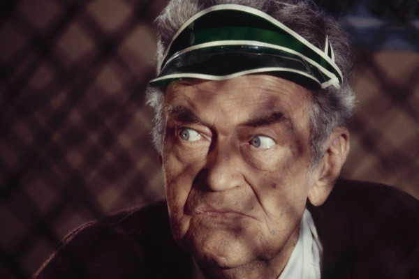
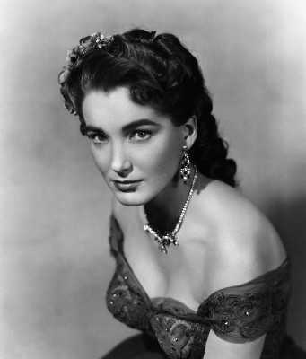
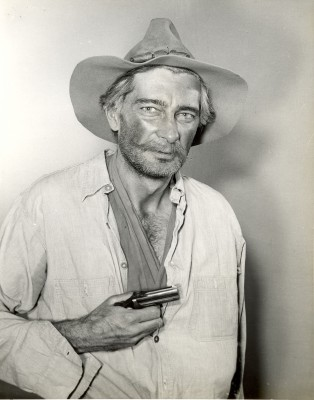
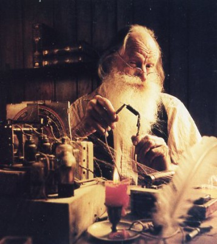

#6568 Meuterei am Schlangenfluß
Alternativ: Bend of the River


 IMDB-Wertung: 7.3 / 10
IMDB-Wertung: 7.3 / 10  Metascore: 0
Metascore: 0 
Two men with questionable pasts, Glyn McLyntock and his friend Cole, lead a wagon-train load of homesteaders from Missouri to the Oregon territory. They establish a settlement outside of Portland and as winter nears, it is necessary for McLyntock and Cole to rescue and deliver food and supplies being held in Portland by corrupt officials. On the trip back to the settlement, up river and over a mountain, Cole engineers a mutiny to divert the supplies to a gold mining camp for a handsome profit.
Jahr: 1952
Dauer: 87 Minuten
FSK: 12
Land: USA Studio: Universal InternationalTonspuren:
Untertitel:
Auflösung: 720p (960x704) Größe: 3010 MB
Genre: Action, Abenteuer, Western, Liebe
Regisseur: Anthony Mann
Drehbuch: Borden Chase
Soundtrack:
Darsteller:
 James Stewart als Glyn McLyntock
James Stewart als Glyn McLyntock Arthur Kennedy als Emerson Cole
Arthur Kennedy als Emerson Cole Rock Hudson als Trey Wilson
Rock Hudson als Trey Wilson-  Jay C. Flippen als Jeremy Baile
-  Julie Adams als Laura Baile
- Lori Nelson als Marjie Baile
- Chubby Johnson als Cap'n Mello
 Harry Morgan als Shorty
Harry Morgan als Shorty- Frances Bavier als Mrs. Prentiss
 Jack Lambert als Red
Jack Lambert als Red-  Royal Dano als Long Tom
 Cliff Lyons als Willie
Cliff Lyons als Willie Frank Ferguson als Tom Grundy
Frank Ferguson als Tom Grundy Victor Adamson als Barfly , uncredited
Victor Adamson als Barfly , uncredited Gregg Barton als Miner , uncredited
Gregg Barton als Miner , uncredited Jack Kenny als Barfly , uncredited
Jack Kenny als Barfly , uncredited Ethan Laidlaw als Barfly , uncredited
Ethan Laidlaw als Barfly , uncredited Philo McCullough als Prospector , uncredited
Philo McCullough als Prospector , uncredited-  Dal McKennon als Miner , uncredited
- Lillian Randolph als Aunt Tildy , uncredited
- Stepin Fetchit als Adam
- Howard Petrie als Tom Hendricks
- Frank Chase als Wasco
- Harry Arnie als Barker , uncredited
- Charles Bennett als Young Man , uncredited
- Manuel Thomas Golemis als Miner , uncredited
- Donald Kerr als Barker , uncredited
- Jennings Miles als Lock , uncredited
- Ron Myron als Man at Settlement Camp , uncredited
- George North als Trapper , uncredited
- Hugh Prosser als Johnson , uncredited
- Richard Randlett als Man at Settlement Camp , uncredited
- Cap Somers als Townsman , uncredited
- George Taylor als Prospector , uncredited
- Albertine V. West als Woman at Settlement Camp , uncredited
- Britt Wood als Roustabout , uncredited
Datei: X:\HD-Western-1900-1959\Meuterei am Schlangenfluß (1952, FSK12, 960x704).mkv seit 12.07.2017
Festplatte: HD Eastern+Western
 Es gibt insgesamt 98 Filme in der Gruppe 'HD-Western-1900-1959'
Es gibt insgesamt 98 Filme in der Gruppe 'HD-Western-1900-1959'